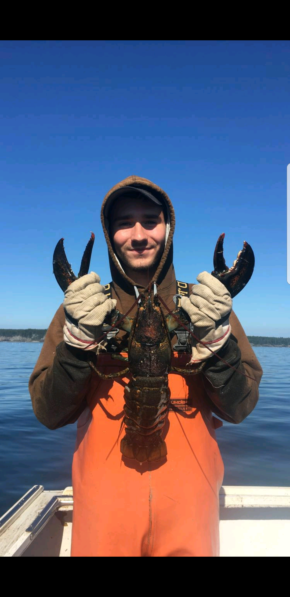

| Homepage | College | High School | Hometown |
|---|---|---|---|
Work Experience |
|||
 |
Liam Flubacher |
My first real job was at the age of 15 when I started working for the Grindstone Association in my hometown of Winter Harbor, Maine. The Grindstone association is a community of summer people who vacation in my town. I was on the grounds crew responsible for taking care of the golf course, pool, and tenis courts. In total I spent three summers working here and enjoyed this job greatly. My second job was actually something that I did part time when I had time off from the golf course. I worked with an arborist doing tree work on many weekends to earn extra money. Finally, this last summer I spent working as a sternman on a lobster boat. |
|